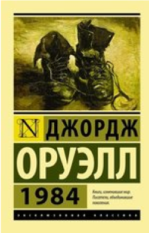

1984
Джордж Оруэлл
Своеобразный антипод второй великой антиутопии XX века - "О дивный новый мир" Олдоса Хаксли. Что, в сущности, страшнее: доведенное до абсурда "общество потребления" - или доведенное до абсолюта "общество идеи"? По Оруэллу, нет и не может быть ничего ужаснее тотальной несвободы...
Читать Добавить